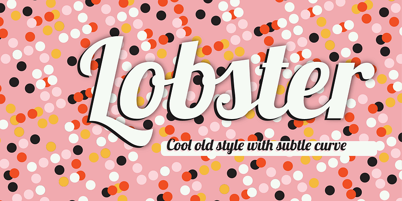

Lobster
Font Designed by Impallari Type, Typography Designed by Sau Lut Chow
The Lobster font took a different approach.
The new OpenType format gives us the
possibility to have multiple versions of each
letter, and that's exactly what we are doing:
Instead of compromising the design of our
letters to force connections, we do what
lettering artist do. We draw many versions
of each letter and a lot of different letter-pairs
(aka "ligatures") so we always use the best
possible variation of each letter depending
of the context of the letter inside each word.
All this happens automatically in any browser
that supports ligatures.
L
